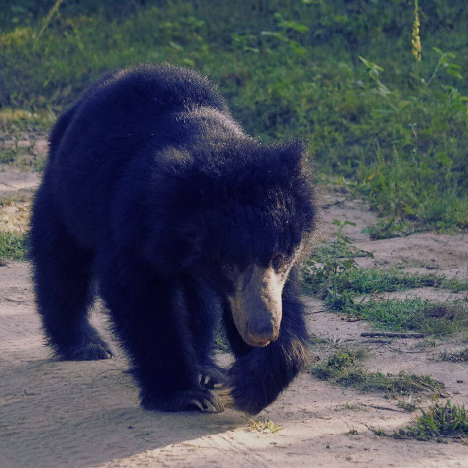
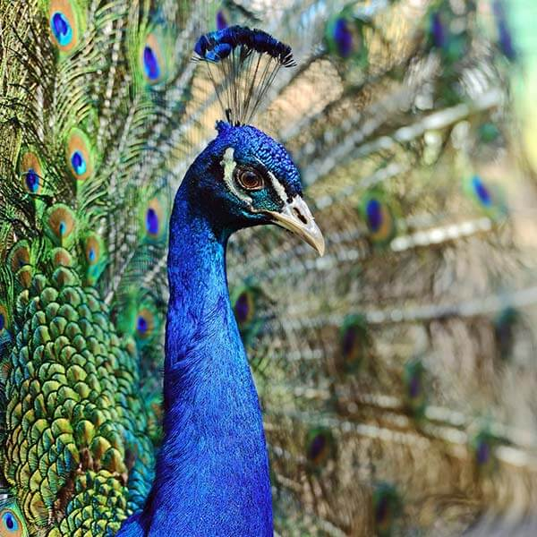
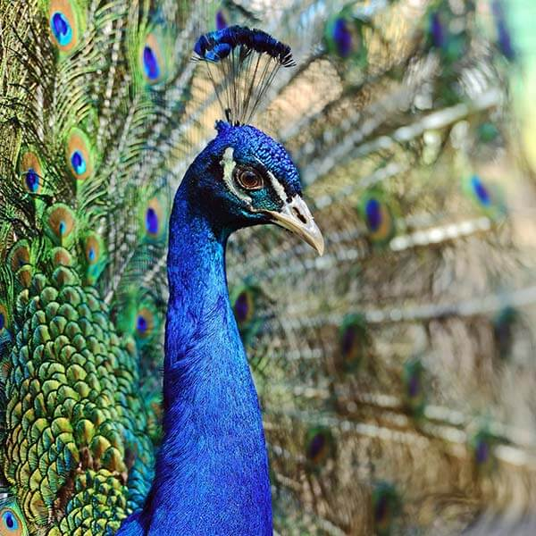
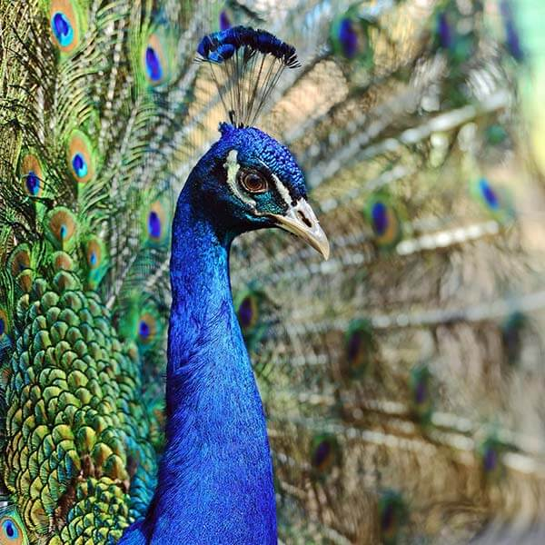

Biodiversity in Wilpattu

 


Wilpattu National Park in Sri Lanka, renowned for its lush landscapes, hosts a diverse range of flora and fauna. The park's ecosystems include dense forests, freshwater lakes, and expansive grasslands, creating a haven for wildlife. Wilpattu's biodiversity includes the majestic Sri Lankan leopard, elephants, sloth bears, and a myriad of bird species, making it a vital conservation area.